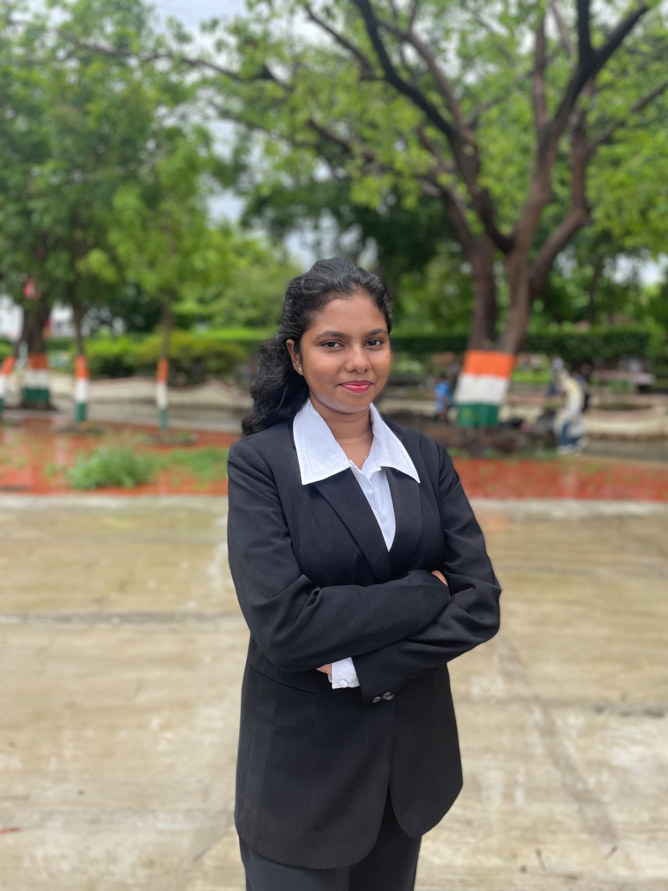
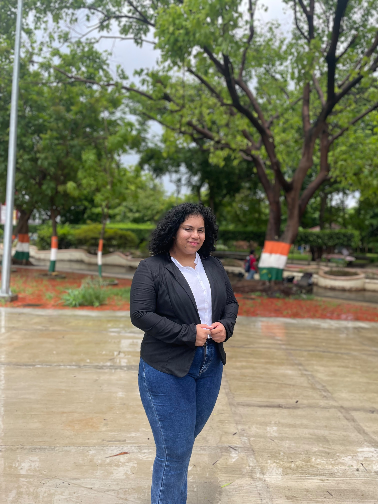

K. J. Somaiya College of Arts & Commerce (Autonomous)
Reaccredited by NAAC with Grade 'A'
Conceptualised under the Department of Political Science, the Political Science Association encompasses the intellectual narrative of the subject of Political Science...
The Department strives to cultivate analytical thinking, democratic values, policy awareness and research aptitude among students through academic engagement, field-based learning, seminars, conferences and collaborative initiatives.
Through PRISM, DataLabs, Y.U.V.A. and various academic activities, the Department aims to foster informed citizenship while encouraging students to engage critically with contemporary political, social and governance issues.
The Political Science Association (PSA) presents comprehensive opportunities that dedicate its intellectual pursuit towards solving and analysing the multifaceted challenges of modern governance and policies. Organising impactful seminars, policy analysis and research paper conventions, panel discussions and academic seminars, it creates an academic environment that challenges conventional, theoretical processes that prevent positive change. PSA showcases a vibrant community through a combination of dedicated guidance by faculty, enthusiastic student initiatives and scholarly dialogue. Each academic year and its growth empower students to develop leadership skills, ethical values, and a strong sense of community engagement. It is a transformative platform that equips students with vision, confidence and a strong foundation to succeed in a dynamic world. By blending academic excellence with curated, empirical opportunities, the department shapes well rounded individuals that are ready to commandeer and innovate on a global stage.

